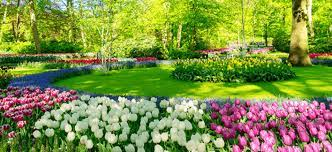
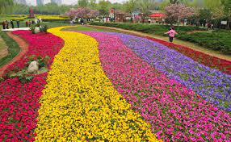
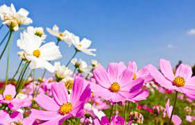
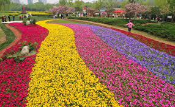
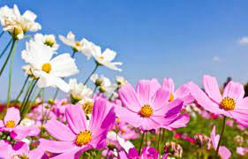

O início da primavera do Hemisfério Sul tem início oficial em 23 de setembro, quando também se inicia o outono no Hemisfério Norte. A primavera é a estação em que ocorre a floração de diversas espécies de plantas, o que confere à atmosfera um clima de renovação. Nesse período, animais tendem a sair da hibernação e animais polinizadores têm sua atividade intensificada. Em geral, tem-se a primavera com o um período de temperaturas amenas e agradáveis, além da acentuação da umidade. Entretanto, para além da ocorrência geral das chuvas, na região central do Brasil, onde o clima é o tropical continental e há maior incidência dos raios solares, é na primavera que se dá o aumento considerável da temperatura e a queda da umidade, que pode atingir níveis alarmantes. O que define astronomicamente o início e o fim da primavera no globo terrestre são os fenômenos equinócio e solstício. No Hemisfério Norte, a primavera se inicia em 21 de março.
Todos os anos, no dia 23 de setembro, tem-se oficialmente o início da primavera, uma das quatro estações do ano. Mas, nessa data, é primavera apenas no Hemisfério Sul, pois, no Hemisfério Norte, é quando se inicia o outono. Do ponto de vista técnico, a primavera não necessariamente coincide com a sua data oficial. Por exemplo: no ano de 2014, o seu início correto, segundo o portal Climatempo, foi às 23h29 do dia 22 de setembro. Já em 2022, a estação teve início às 22h04 do dia 22 de setembro. Podemos pensar então no que marca, astronomicamente, o início da primavera, e a resposta são os fenômenos equinócio e solstício. A seguir, veremos um pouco da relação entre eles e a referida estação.
A data de início da primavera possui relação com o fenômeno equinócio, que nada mais é do que o período do ano em que os dois hemisférios são igualmente iluminados pelos raios solares, de forma que os dias e as noites possuem, basicamente, a mesma duração. É válido lembrar, porém, que o equinócio exato só ocorre em um momento do ano, pois, logo depois, a luz solar, gradativamente, inclina-se para o Hemisfério Sul, fazendo com que, aos poucos, os dias se tornem cada vez mais longos do que as noites.
SolstícioQuando o processo dos dias se tornarem mais longos atinge o seu ponto máximo, ou seja, o momento em que o dia for o mais extenso possível, temos o solstício, que costuma ocorrer no dia 21 de dezembro, encerrando a primavera e iniciando o verão. Atenção: Perceba, porém, que as estações do ano são apenas convenções, pois, se pensarmos bem, a data de início da primavera é apenas o ápice do posicionamento da Terra em relação aos raios solares durante o movimento de translação. Assim, à medida que o tempo passar, mais próximos do verão estaremos e, gradativamente, teremos “menos primavera”.
 


